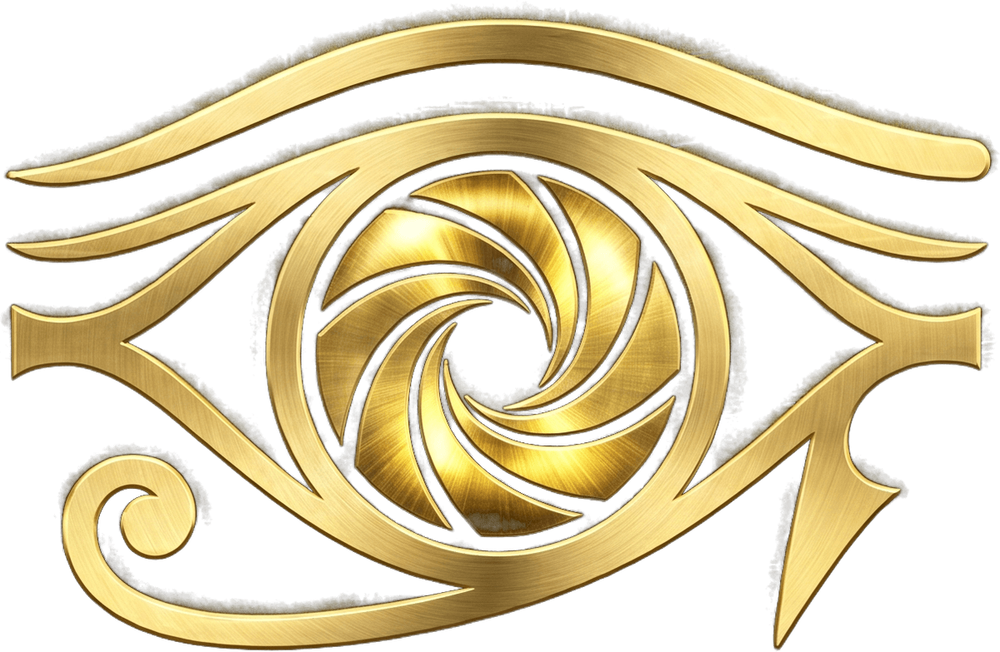
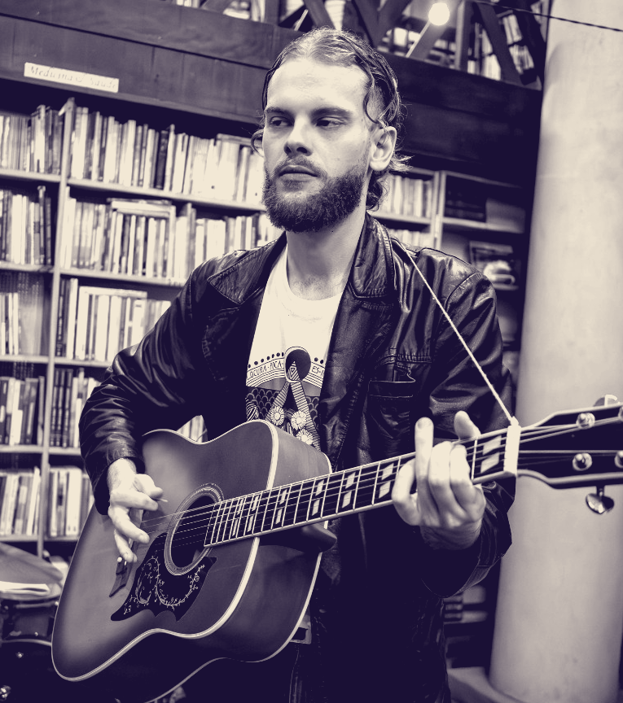

Golden Eye Prods. apresenta


Johann
Sebastian
K.
Tropicália
& Rock Nacional
Os Mutantes · Raul Seixas
+ discotecagem em vinil
Sáb
12
Set · 17h
Salvador Vegan Café
Rua Henrique Meyer, 61 — Centro, Joinville/SC
Entrada solidária ·
doação ao Lar Betânia
alimento, roupa ou contribuição em dinheiro